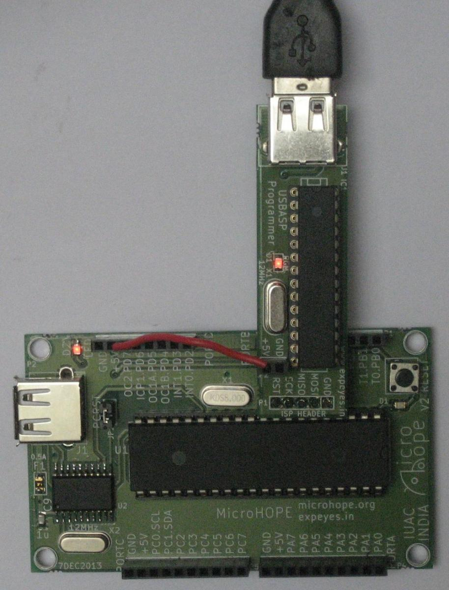
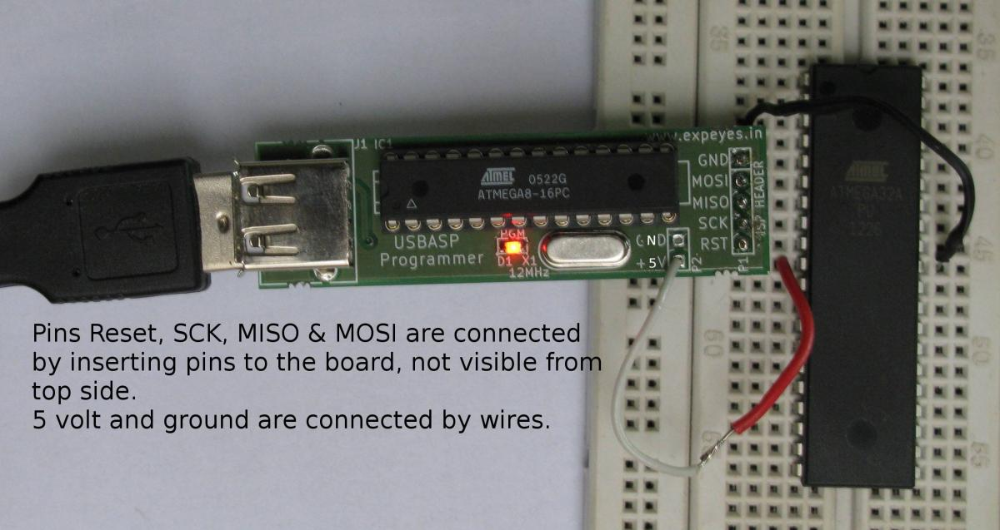

Most of the micro-controllers have the In-System Programming (ISP) feature, implemented using three pins, Serial ClocK (SCK), Master-In–Slave-Out (MISO) and Master-Out–Slave-In (MOSI). All types of memory on the micro-controller can be accessed using the SCK, MISO and MOSI pins, while holding the RESET pin LOW. These pins, along with ground, are available on the 5 pin header J7 on the microHOPE board.
USBASP is an open sourced ISP (In-System Programming) programmer available from http://www.fischl.de/usbasp/ . This is provided as an accessory to MicroHOPE due to several reasons. If you want to develop programs that uses the UART of Atmega32, you need to upload code using ISP. USBASP can be used for programming other AVR micro-controllers also. It can be used for burning the boot loader. The LED on the board indicates power. It goes off while uploding code, giving an additional indication.
The figure shows how to connect the ISP to MicroHOPE. MicroHOPE is powered by the USBASP board, using an external wire.
Uploading via ISP interface using USBASP
To upload blink.hex, issue the command
$ avrdude -B10 -c usbasp -patmega32 -U flash:w:blink.hex
or use the batch file mh-upload-usbasp.sh like
$ ./mh-upload-usbasp.sh blink
Writing the fuses and boot-loader to prepare ATmega32 to be used in MicroHOPE
avrdude
-B10 -c usbasp -patmega32 -U flash:w:ATmegaBOOT_168_atmega32.hex
# upload hex file
avrdude -B10 -c usbasp -patmega32 -U lfuse:w:0xff:m -U
hfuse:w:0xda:m # set fuses
to 0xFF and 0xDA
avrdude -b 19200 -P /dev/ttyACM0 -pm32 -c stk500v1
-n
# verify the device on /dev/ttyACM0
It is easier to use the script mhbootload32-usbasp.sh containing these commands.
You can program AVR series ICs using the USBASP programmer, by connecting them as shown in the figure. There are 6 external connections to the board. Groung and 5 volt supply are connected by insering two wires. The remaining 4 connections are made using four numbers 1mm square pins, one end to the bread board and the other to the USBASP board socket.
The command
$ avrdude -B10 -c usbasp -patmega32 -U flash:w:blink.hex
is used for uploading the code that makes an LED connected to PB0 blink.